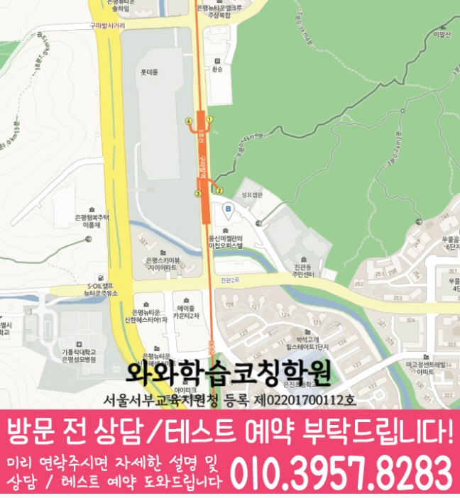

많이 푸는 것보다, 중2 수학에서 흔히 흔들리는 단원과 개념 이해도를 먼저 확인해 학습 순서를 설계합니다.
지역별 수강 안내
진관동 중2 수학학원
방문할 지점과 수강 조건
은평점 수강 정보
- 연결 지점
- 와와학습코칭학원
- 수학 수강 학년
- 개설 학년 확인 필요
- 방문 주소
- 서울특별시 은평구 진관동 진관2로 29-21 드림스퀘어 제 8층 804호 805호
은평점의 제공 자료에서는 중2 수학 수강 가능 여부가 확인되지 않습니다. 등록 전 해당 학년의 개설 여부와 수업 조건을 먼저 문의해 주세요.


학습커리큘럼
배우는 내용과 공부의 시작점을 함께 살펴보세요
학교 진도와 현재 이해도에 맞춰 학습 범위·순서·확인 과제를 찾아보세요.
학생·학부모 교육정보
과목별 공부 방법도 함께 살펴보세요
시험 준비, 과목별 공부와 학습 습관을 구체적인 예시로 확인하세요.
선생님 소개
은평점 선생님을 만나보세요
선생님의 인사와 학습 지도 방향을 살펴보고, 상담에서 궁금한 내용을 준비해 보세요.
은평점의 제공 자료에서는 중2 수학 수강 가능 여부가 확인되지 않습니다. 등록 전 해당 학년의 개설 여부와 수업 조건을 먼저 문의해 주세요.
진관동 중2 수학 수업의 핵심 포인트
개념을 익힌 뒤 바로 유형으로 넘어가되, 같은 유형이라도 틀리는 이유를 분해해 다음 풀이 전략까지 잡습니다.
선생님 특징
진관동 중2 학생들이 어디에서 막히는지 풀이 과정과 질문으로 확인하고, 필요한 개념을 다시 연결해 줍니다.
틀린 문제를 다시 풀기만 하지 않고, 왜 틀렸는지(계산·해석·조건·공식 적용) 원인을 정리합니다.
수업 진행방식
1. 현재 수준 확인
중2 학교 진도, 최근 시험/모의고사 흐름을 바탕으로 부족 단원과 자주 발생하는 실수 유형을 체크합니다.
2. 개념 정리와 수학 유형 학습
교과 핵심 개념을 정리한 뒤, 기본-실전-응용 순서로 유형을 확장하며 풀이 루틴을 만듭니다.
3. 오답 관리와 학습 피드백
오답 노트를 단순 기록이 아니라 ‘다음에 어떻게 풀지’까지 남기고, 풀이 과정 점검으로 재발을 줄입니다.
학년별 학습 전략(중2 중심)
초등
- 기초 연산과 문장제 해석을 안정적으로 잡아 수학 자신감을 만듭니다.
- 중등에서 필요한 개념 흐름을 미리 준비합니다.
중등
- 중2 내신 대비를 위해 단원별 개념 점검과 유형 반복을 병행합니다.
- 실수 패턴(조건 누락, 공식 적용 오류, 계산 미숙)을 분류해 교정합니다.
고등
- 내신과 수능형 문제를 구분해 목표에 맞는 전략으로 학습합니다.
- 약한 단원 집중 관리와 시간 관리 훈련을 함께 진행합니다.
시험 대비
- 학교 시험 범위와 출제 경향에 맞춰 복습 계획을 조정합니다.
- 시험 전에는 자주 틀리는 유형과 실수 원인을 우선 점검합니다.
진관동 중2 수학학원, 은평구 수학 내신을 준비한다면 와와학습코칭센터 은평점이 도와드립니다. 학생의 현재 상태를 기준으로 필요한 학습을 정리하고, 상담을 통해 수학 학습 방향을 구체적으로 안내드립니다.
센터 위치 안내
주소
서울특별시 은평구 진관동 진관2로 29-21 드림스퀘어 제 8층 804호 805호
오시는 길
구파발역 2번 출구 쪽 구파발성당 맞은편, 1층에 이디야와 서브웨이가 있는 건물입니다.
상담에 참고할 학교 목록
학교별 내신 수업과 수강 가능 여부는 센터에 확인해 주세요.
초등학교
서울북한산초등학교
서울신도초등학교
서울은빛초등학교
서울은진초등학교
서울진관초등학교
중학교
신도중학교
연천중학교
진관중학교
고등학교
대성고등학교
선일여자고등학교
신도고등학교
은평메디텍고등학교
진관고등학교
하나고등학교
과목별 수강 가능 학년
국어
수강 가능 학년은 센터에 문의해 주세요.
영어
초3
초4
초5
초6
중1
중2
중3
고1
수학
수강 가능 학년은 센터에 문의해 주세요.
과학
중1
중2
중3
고1
사회
중1
중2
중3
고1
수강 안내
고2·고3은 화상수업 병행 등 수강 조건과 과목별 수업 지점을 센터에 확인해 주세요.
학원 등록 정보
교육비 참고와 확인할 조건
지역 공통 참고 금액입니다. 이 지점의 확정 교습비는 안내 자료와 상담에서 확인해 주세요.
기존 공통 안내: 서울 (1회 90~100분, 단위: 원)
| 횟수 | 초등 | 중등 | 고등 |
|---|---|---|---|
| 주 3회 | 249,000 | 266,000 | 299,000 |
| 주 4회 | 319,000 | 341,000 | 384,000 |
| 주 5회 | 389,000 | 416,000 | 469,000 |
위 표는 기존 공통 안내 금액으로, 현재 센터별 교습비와 다를 수 있습니다. 실제 과목·수업 시간·추가 프로그램과 최종 금액은 교습비 안내 자료 및 센터 상담을 통해 확인해 주세요.
중2 수학 상담부터 오답관리까지 이어지는 흐름
중2 수학은 중학교 수학의 중심 개념이 본격적으로 쌓이는 시기입니다. 상담에서는 학교 진도, 최근 시험 결과, 자주 틀리는 유형, 풀이 기록을 함께 확인해 학생에게 맞는 개념 보강과 내신 대비 순서를 잡습니다.
현재 수준 확인
학교 진도, 최근 시험 결과, 어려운 단원, 숙제 수행률과 실수 유형을 확인합니다.
개념과 유형 진단
일차함수, 연립방정식, 도형, 확률 등 핵심 단원의 개념 이해와 문제 적용 과정을 나누어 봅니다.
플래너 실행 점검
단원별 복습, 유형 반복, 시험 범위 마감 계획을 세우고 실제 수행 여부를 확인합니다.
오답 원인 분석
틀린 문제를 개념 부족, 조건 누락, 계산 실수, 풀이 순서 오류로 분류해 다음 학습으로 연결합니다.
CONSULTING CHECKLIST
진관동 중2 수학학원 상담 전 체크리스트
실제 상담 전 아래 항목을 확인하면 학생에게 필요한 영어·수학 학습 방향을 더 빠르게 정리할 수 있습니다.
- 현재 교재사용 중인 교재와 진도를 확인합니다.
- 최근 시험지점수보다 반복되는 오답 유형을 확인합니다.
- 공부 시간평소 공부 시간과 숙제 수행 정도를 봅니다.
- 상담 목표성적, 습관, 오답, 시험 대비 중 우선순위를 정합니다.
STUDY GUIDE
진관동 중2 수학 학원 학습관리 포인트
진관동 중2 수학 학원을 찾는 학생이라면 중2 과정에서 필요한 수학 학습 목표를 먼저 정리하는 것이 좋습니다. 현재 학교 진도와 최근 시험 결과, 숙제 수행 습관을 함께 보면 상담 방향이 훨씬 구체적입니다.
공식 암기보다 단원 핵심 개념을 말로 설명할 수 있는지 확인하고, 설명이 막히는 부분부터 다시 정리합니다.
학교 시험에 자주 나오는 기본·응용 유형을 구분하고, 풀이 순서를 스스로 재현할 수 있게 반복합니다.
계산 실수, 조건 해석 오류, 개념 부족, 시간 부족을 나누어 기록하면 다음 복습 계획이 더 정확해집니다.
서울 은평구 진관동 상담 전 체크
최근 시험지, 학교 진도, 어려운 단원, 숙제 수행 정도를 함께 정리해두면 상담에서 학생에게 필요한 학습 순서를 더 빠르게 잡을 수 있습니다.
함께 보면 좋은 학습가이드
현재 페이지의 학년·과목과 연결되는 정보성 콘텐츠입니다. 지역 페이지와 함께 읽으면 상담 준비와 학습 계획을 더 구체화할 수 있습니다.
진관동 관련 학원 페이지
현재 보고 있는 지역 안에서 센터 안내와 학년·과목별 상세 페이지로 바로 이동할 수 있습니다.
진관동 중2 수학학원 상담이 필요하신가요?
중2 수학의 현재 개념 이해도, 내신 대비 계획, 중3 과정 준비, 오답 패턴을 상담문의로 남겨주시면 학습 방향을 구체적으로 확인할 수 있습니다.
상담문의LOCAL DETAIL LINKS
진관동 관련 학습 페이지 바로가기
같은 동네 안에서 함께 보면 좋은 학년·과목별 학습 안내 페이지를 정리했습니다.
동네 학원
진관동학원 영어수학 전문학원
같은 동네의 기본 영어수학 학원 안내로 이동합니다.
연관 과정 진관동 고1 수학학원같은 동네의 다른 학년·과목 안내도 함께 확인할 수 있습니다.
연관 과정 진관동 고1 영어학원같은 동네의 다른 학년·과목 안내도 함께 확인할 수 있습니다.
연관 과정 진관동 고2 수학학원같은 동네의 다른 학년·과목 안내도 함께 확인할 수 있습니다.
연관 과정 진관동 고2 영어학원같은 동네의 다른 학년·과목 안내도 함께 확인할 수 있습니다.
연관 과정 진관동 중2 영어학원같은 동네의 다른 학년·과목 안내도 함께 확인할 수 있습니다.
연관 과정 진관동 중3 수학학원같은 동네의 다른 학년·과목 안내도 함께 확인할 수 있습니다.
연관 과정 진관동 중3 영어학원같은 동네의 다른 학년·과목 안내도 함께 확인할 수 있습니다.
수강 전에 자주 묻는 질문
진관동에 있는 별도 지점인가요?
이 동네 안내에서 연결되는 곳은 와와학습코칭학원입니다. 실제 방문 주소는 서울특별시 은평구 진관동 진관2로 29-21 드림스퀘어 제 8층 804호 805호입니다.
중2 수학을 수강할 수 있나요?
은평점의 제공 자료에서는 중2 수학 수강 가능 여부가 확인되지 않습니다. 등록 전 해당 학년의 개설 여부와 수업 조건을 먼저 문의해 주세요.
교육비 표의 금액으로 바로 등록할 수 있나요?
지역 공통 참고표는 개별 지점의 확정 교습비가 아닙니다. 교습비 안내 자료에서 과목당 금액과 수업 시간·횟수·교재비를 확인하고 최종 비용을 상담에서 확인하세요.
안내 자료 대조: . 현재 모집·시간표·최종 비용은 지점에서 확인해 주세요.